We evaluate our approach using simulated intersection scenarios on NuScene data, where the ego car remains stationary. In the bird's eye view map, we manually place agents crossing the intersection from left to right or right to left. These agents' bounding boxes are then projected onto the ego car's perspective. The resulting annotated data is used as input for the Box2Video network, which generates realistic video sequences.
We showcase a range of BDD generation results produced by our model in different scene scenarios, such as city, urban, highways, busy intersections and at night. Each visualization displays a 25-frame clip at 5 fps. The left column displays the ground-truth clip, while the right column features Ctrl-V generations, created using the BBox predictor's predictions and generated by Box2video. Inputs: ONE initial GT frame + THREE initial GT 2D-bounding-box frames + ONE last GT 2D-bounding-box frame.
Our model can predict and condition on both 2D bounding boxes and 3D-bounding boxes. Below are our 3D-bounding-box frame predictions and video generations conditioned on the 3D-bounding-box predictions from KITTI and vKITTI2 datasets.Inputs: ONE initial GT frame + THREE initial GT 3D-bounding-box frames + ONE last GT 3D-bounding-box frame. Left: bounding-box frame predictions. Right: Video generated based on predicted bounding-box frames. These examples are being compressed from 375x1242 to 320x512.
A frame-by-frame visualization of Box2Video generation, conditioned on the ground-truth 2D-bounding-box frame sequence from the BDD dataset. The ground-truth bounding boxes are overlayed in the plots.
| 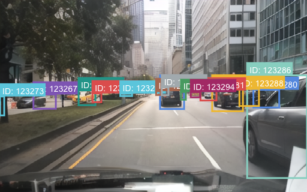 | 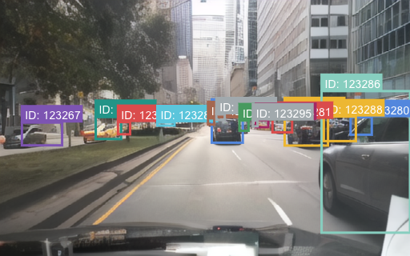 | 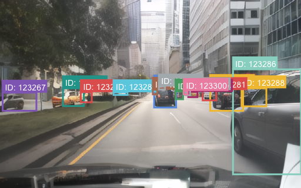 | 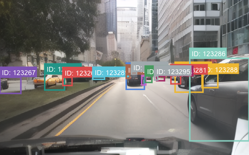 | 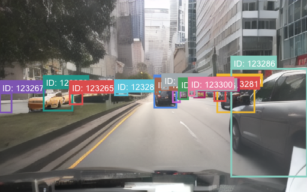 |
| 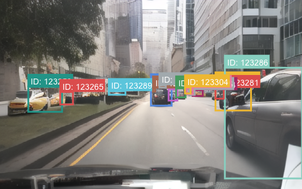 | 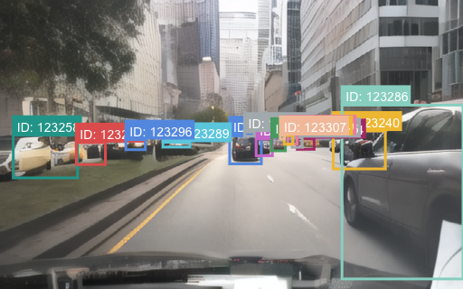 | 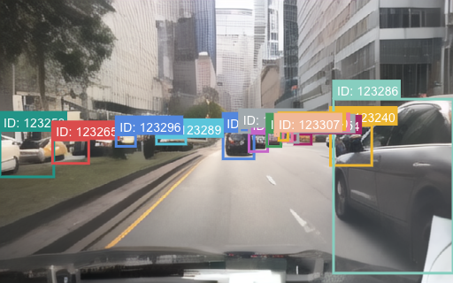 | 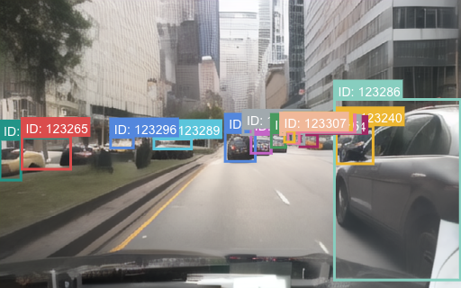 | 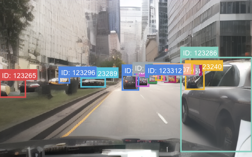 |
| 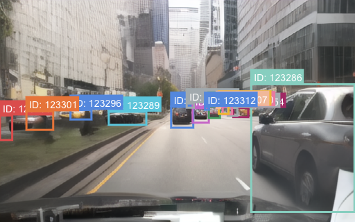 | 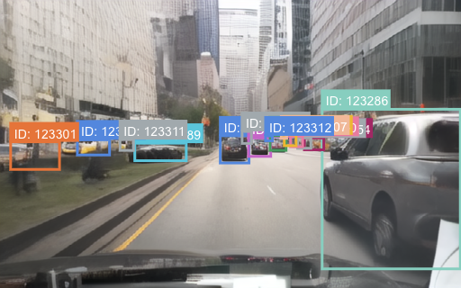 | 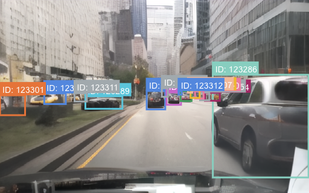 | 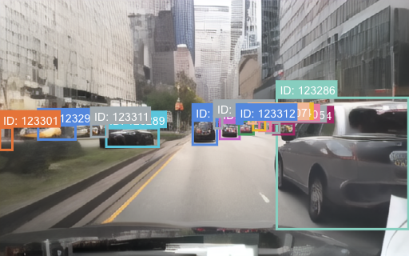 | 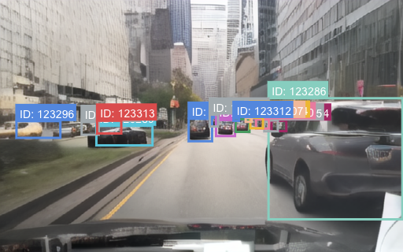 |
| 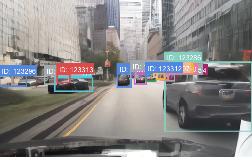 | 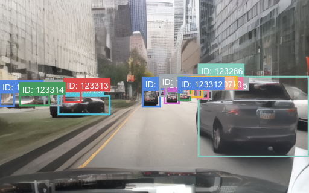 | 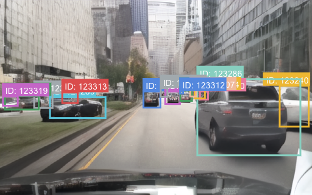 | 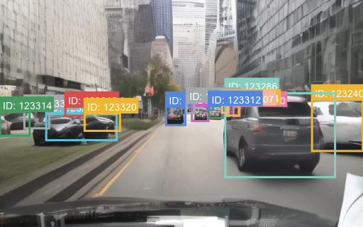 | 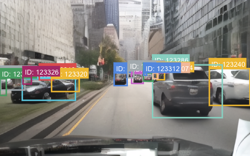 |
| 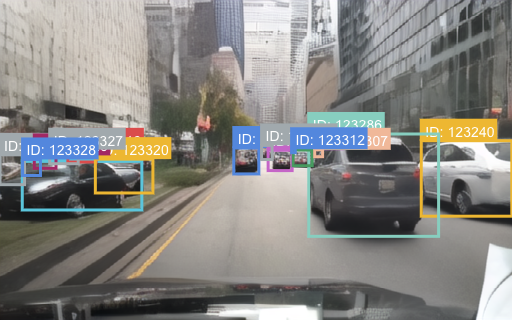 | 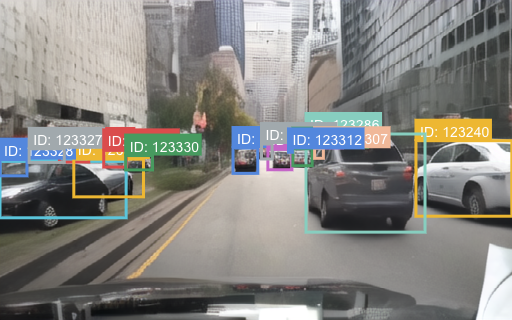 | 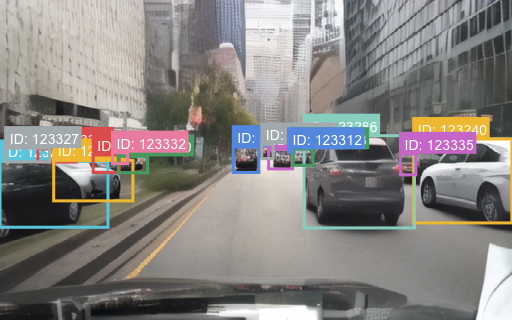 | 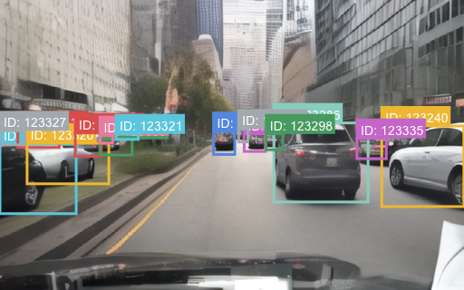 | 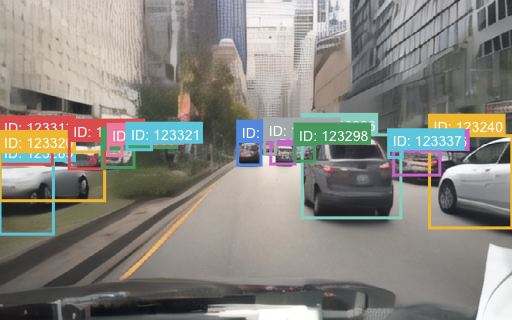 |
BDD100K's generation visualization when our BBox predictor receives a trajectory-frame as the final conditional frame instead of a 2D-bounding-box frame.